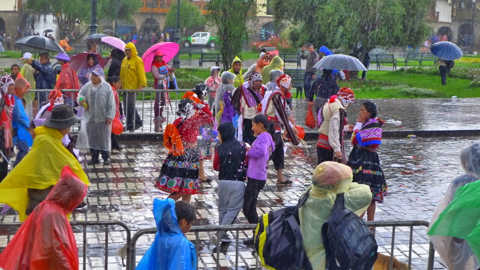

Pérou : this is the Andes
Bonjour à tous !
Nous vous quittions il y a deux semaines en Equateur à la frontière avec le Pérou, il est temps de vous faire partager les histoires de notre traversée de cet immense pays… Grand comme deux fois la France ! Retour sur notre séjour sur place.
Nous entrons au Pérou le 24 janvier et faisons une courte étape à Chiclayo, petite ville littorale du nord du pays d’où nous prévoyons de rejoindre Tarapoto. Cette dernière ville est située à la lisière de la forêt amazonienne, à une douzaine d’heure de route à l’intérieur du pays. Là-bas, nous découvrons la chaleur locale qui nous change de nos jours passés dans les hauteurs andines… Nous y prenons une nuit de repos avant de rejoindre San Roque de Cumbaza, minuscule village caché dans la selva, la jungle, où nous pensons alors commencer deux semaines de travail dans un laboratoire d’assainissement de l’eau…

L'itinéraire de notre passage au Pérou
C’est à bord d’une vieille voiture faisant office de colectivo que nous nous enfonçons donc avec enthousiasme dans les premiers kilomètres de cette forêt réputée si sauvage. Arrivés à San Roque, nous rencontrons David, un sympathique cinquantenaire anglais qui nous héberge dans sa maison un peu spartiate (ni électricité, ni gaz, ni eau potable bien sûr) mais spacieuse et où nous sommes libres d’aller et venir à notre guise. Nous commençons par explorer un peu le village et ses environs et passons quelques heures à nous baigner dans le fleuve Cumbaza, où de nombreux péruviens du village barbotent. Sur place, nous rencontrons un couple d’italiens de Bolsano, Gabriel et Sophie ainsi qu’un compatriote, Lazare, qui partagent la maison avec nous. En plus du spectacle de la jungle luxuriante, nous découvrons aussi la myriade de petites bêtes qui l’animent… Les moustiques et les mouches des sables sont agressifs et, une fois la nuit tombée, la présence d’une tarentule sur le plan de travail de la cuisine me fait bondir d’un bon mètre. Courageux mais pas téméraire, j’inspecte le lit sous toutes ses coutures avant de m’étendre dessus.
San Roque de Cumbaza, un village au cœur de la selva amazonienne péruvienne
Le lendemain matin cependant, nous comprenons que les tâches à effectuer sont extrêmement limitées et David, le responsable, nous enjoint plus à l’oisiveté qu’à la participation à ses expériences, que nous ne pouvons de toute façon qu’observer. En l’absence de réel travail à accomplir sur place, Grégoire et moi prenons la décision de poursuivre le voyage, quitte à chercher un autre hébergement plus loin sur notre route. Nous saluons donc tout le monde et repartons dans l’après-midi pour Tarapoto avec pour objectif de rejoindre Cusco, la mythique ville péruvienne. Seul souci : la ville se situe à 1700 kilomètres de notre point de départ…
On profite bien du fleuve Cumbaza... mais à part ça il n'y a pas grand chose à faire
Les jours suivants se résument donc en un enchaînement de transports divers à travers les pistes en gravier de la selva et les routes en lacet des Andes. De Tarapoto, nous rejoignons en une interminable journée Huanuco, à 600km au sud, à bord d’une petite voiture où pas moins de cinq passagers et un conducteur sont réunis. Voyant que ma patience s’érode à vue d’œil et devant la distance qui nous reste à parcourir, Greg suggère que nous rejoignions Lima en bus afin de s’y reposer pour deux jours avant de prendre un bus direct jusqu’à Cuzco. Douze heures de bus supplémentaires nous mènent donc à la capitale péruvienne.
Après plusieurs jours de transport, on arrive enfin à Lima
Lima première capitale sud américaine que nous traversons qui se trouve au bord de la mer
Petite déception en découvrant la ville, son centre historique a souffert de nombreux tremblements de terre et son charme en pâtit. Nous visitons quand même quelques églises, le marché et nous baladons sur le front de mer (Lima est la première capitale latino-américaine en bord de mer que nous visitons !). Nous reprenons surtout des forces pour l’ultime trajet de bus à venir qui nous sépare de Cuzco et qui ne durera pas moins… de trente heures. C’est donc trépignant d’impatience que nous découvrons la magnifique capitale des Incas, les jambes bien engourdies.
La place centrale de Cuzco, capitale du royaume Inca

Une jolie ville nichée au creux des Andes
Nous sommes le 2 février et, ragaillardis par une nuit dans un vrai lit, nous parcourons les rues à l’architecture coloniale et les immenses églises bâties par les espagnols à leur arrivée. Nous profitons de notre journée pour planifier notre approche du lieu emblématique du Pérou : le Macchu Pichu. Sur les conseils de notre ami Henri, Grégoire nous trouve un tour « jungle trek » partant le lendemain à un prix défiant toute concurrence : le jour suivant, nous voilà partis pour quatre jours de marche, de vélo et de traversées de rivières à travers la selva alta péruvienne !
La première journée est assez sportive avec une descente de deux mille mètres de dénivelés à vélo suivie d’une séance de rafting dans un torrent plutôt… énervé. Si le temps est gris et si nous finissons trempés à la fin de la journée, nous découvrons la joyeuse équipe internationale avec qui nous partageons ce tour. Pas moins de deux flamandes, d’un espagnol, d’un chilien, d’une italienne, de trois sud-coréens, d’une suisse et de trois français nous accompagnent.
Le premier jour nous dévalons 2000m dans les Andes à vélo, certains passages sous une pluie torrentielle
C'est l'histoire de 5 français, 3 coréens, 2 belges, 1 espagnol, 1 italienne et 1 suissesse qui partent en expédition vers le Macchu Pichu
Les trois jours suivants sont remplis par de longues marches à travers les verts paysages des bas alpages péruviens (nous marchons aux alentours des 1500 mètres d’altitude). Le temps est clément et nous permet d’apercevoir le Salcantay, un superbe sommet enneigé culminant à 6271 mètres… qui nous rappelle quelques douloureux souvenirs. Le moment le plus époustouflant reste notre passage sur un sentier Inca à flanc de falaise, perché à quelques 400 mètres au-dessus du torrent que nous avons descendu la veille. Nous traversons de petits villages péruviens et avons bien sûr le droit à des dégustations de fruits et produits locaux, avec explications très vendeuses de notre guide.
C'est parti pour 3 jours de marche à travers les Andes
On profite des beaux paysages de la selva alta péruvienne
Antoine scrute l'antique sentier Inca
Traversée de la rivière façon un peu artisanale
Saviez vous que les avocats poussaient dans d'immenses arbres?
Après une nuit à Aguas Calientes, petite bourgade touristique au pied du Machu Picchu, le quatrième jour du circuit et le clou du spectacle sont au programme de la journée. Après un réveil aux aurores, nous grimpons l’escalier raide qui nous mène sur le site où, à notre arrivée, le soleil se lève à peine et nous fait découvrir sous une brume mystérieuse les ruines du Machu Picchu et, mieux encore, l’endroit stupéfiant où elles sont situées. Grégoire et moi sommes si stupéfaits par ce spectacle qui change toutes les minutes, la brume se dissipant puis revenant de plus belle, que nous parlons à peine pendant les cinq heures où nous le parcourons. Nous parcourons quelques chemins alentours pour être sûrs de l’exhaustivité de notre visite, puis retrouvons après quelques heures de marche notre bus où nous nous endormons, épuisés.
Dernière montée avant d'arriver au Macchu Pichu !
Ca y est on aperçoit enfin les ruines Incas, d'abord sous le brouillard
On passe cinq heures à se balader sur l'ensemble du site
On ne coupe pas court à la traditionnelle photo avec les ruines et la montagne du Wayna Pichu en arrière plan
Quelques lamas nous accueillent au sommet
Le site est magnifique et sa réputation n'est pas galvaudée!
Nous passons notre dernière journée au Pérou dans les rues de Cuzco où le Carnaval fait rage ! Les bombes à eaux et bombes de mousse à raser sont difficilement évitables et pour profiter de cette dernière journée, nous rasons les murs pour éviter les nombreuses projections des jeunes péruviens déchaînés. Leurs aînés, eux, nous offrent un spectacle charmant habillés en tenue traditionnelle sur la Plaza de Armas.
Le Carnaval de Cuzco, les plus vieux sont en habit traditionnel, chantent et dansent

Les plus jeunes se lancent dans des batailles de bombe à eau et de mousse à raser... et ce n'est pas parce que vous êtes un touriste que vous y échappez!
Le soir, départ pour Copacabana et la Bolivie, d’où nous vous dirons plus de nouvelles d’ici une grosse semaine ! Ensuite, nous avons eu la chance de trouver un vigneron français installé au Chili pour lequel nous allons travailler une dizaine de jours, avant d’attaquer la longue route argentine… vers la Patagonie et le bout du monde !
On se quitte comme d'habitude avec le jeu concours de la semaine. Saurez vous reconnaître ce drôle d'animal que nous avons croisé durant notre randonnée ?
Quel est donc cet animal (l'espèce de castor, pas Antoine) ?
Envoyez vos réponses à contact@aquamerica.fr et le gagnant aura droit à sa dédicace sur notre page Facebook !
Merci pour votre lecture, et à très bientôt !!
Antoine